月4時間の作業で、
旅費が消える生活を手に入れる！
「仕組み構築
完全マニュアル」
【基礎編】
目 次
- はじめに
- 第1章 マイルの秘密
- 第2章 「仕組み」の全体像
- 第3章 貯まったマイルの「賢い使い方」
- 第4章 実践者たちの声
- 最終章 「いつかね」を卒業する日
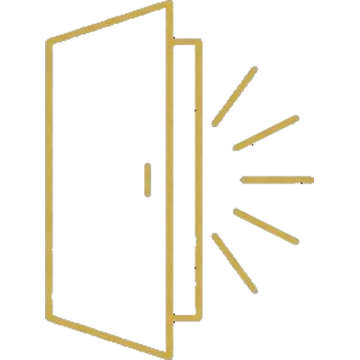
はじめに
旅費が消える生活への第一歩
「もっと自由に旅行がしたい」
あなたも、そう思ったことがあるのではないでしょうか？
毎年、家族で沖縄に行きたい。
北海道で美味しいものを食べたい。
子供をディズニーに連れて行ってあげたい。
でも、飛行機代だけで10万円以上。
ホテル代を入れたら20万、30万...。
子供が「沖縄行きたい」「ディズニー行きたい」と言うたびに、
「いつかね」と答える自分が情けない。
旅費を気にせず、思い切り推し活がしたい。
ライブやイベントのたびに、交通費と宿泊費で財布が空っぽ。
「推しのためなら仕方ない」と思いつつも、毎回の出費が正直キツい。
もっと気軽に遠征できたら、どれだけ楽しいか...。
日本中を旅しながら、リモートワークをしてみたい。
今の時代、パソコン1台あればどこでも仕事ができる。
なのに、旅費がネックで結局いつも同じ場所にいる。
月に何度も旅行できるほどの余裕があれば、
憧れの「旅しながら働く」生活ができるのに...。
でも、現実は。。。
仕事は忙しい。
副業する時間もない。
節約しても、旅費なんて到底貯まらない。
「このまま一生、旅行は我慢し続けるしかないのか...」
もし、あなたがそんな風に感じているなら、
このマニュアルはあなたの為にあります。
その前に、正直に申し上げます
この先を読む前に、ひとつだけ。
すでに毎月ビジネスクラスに乗って、
ラウンジでシャンパンを飲んでいる方。
この先は、あなたには関係のない話です。
そっと閉じて、その生活を存分に楽しんでください。
「このまま旅行は我慢し続ける生活で、まあいいや」
と思っている方。
こちらも、読んでいただいても意味がありません。
そっと閉じて、いつもの毎日にお戻りください。
このマニュアルには、そこそこの分量があります。
興味のない方の時間を奪うつもりはありません。
ただ、
高級ホテルにも、ビジネスクラスにも興味はある。
でも、今まで縁がなかった。
——そういう方には、これはとても大事な話になります。
そういう方だけ、この先を読み進めてください。
実は、私、普通の会社員ですが、毎月"タダ同然"で高級ホテルに泊まっています
マリオットの高級ホテル。
1泊5万円、10万円は当たり前。
3,000円の朝食ビュッフェ。
スイートルームへのアップグレード。
目の前にはプライベートビーチとプール。
夜はラウンジで無料のアルコール。
普通に生活していたら、絶対に泊まれないホテル。
でも、私は毎月"タダ同然"で泊まっています。
そして、私だけではありません。
この仕組みを教えた人たちも皆、毎月"タダ同然"で泊まっています。
「え、どういうこと？」
そう思いますよね。
種明かしをしましょう。
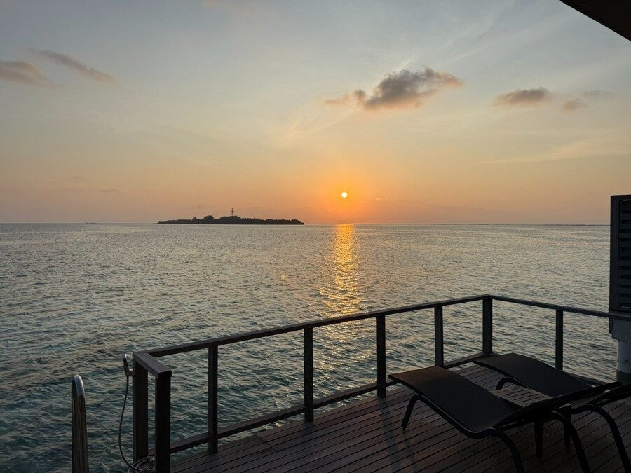
秘密①：「マイル」を使っています
私たちが"タダ同然"で旅行できている最大の理由。
それは、「マイル」を使っているからです。
マイルとは、航空会社が提供しているポイントのようなものです。
貯めると、飛行機の航空券や、高級ホテルの宿泊と交換できます。
「マイルなら知ってるよ。クレジットカードで貯まるやつでしょ？」
はい、その通りです。
でも、私たちがやっているのは、
クレジットカードでコツコツ貯める方法ではありません。
秘密②：「勝手に貯まる仕組み」を作っています
普通の人は、自分の買い物でマイルを貯めようとします。
でも、それだと全然貯まりません。
毎月10万円使っても、年間で貯まるのは1万マイル程度。
家族4人で沖縄に行くには、4年以上かかります。
私たちは、そんな方法は使いません。
私たちは、「マイルが勝手に貯まる仕組み」を作っています。
一度この仕組みを作ってしまえば、
- 毎月、自動的に数万マイルが貯まる
- しかも、お金が減るどころか、毎月5〜7万円の収入が増える
- 月の稼働時間はたったの4時間程度
という状態が実現できます。
「そんなうまい話があるの？」
そう思いますよね。
このマニュアルでは、その「仕組み」の全体像をお伝えします。
このマニュアルで学べること
このマニュアルを最後まで読むと、あなたは以下のことが理解できるようになります。
✓ 「マイル」とは何か、なぜ価値があるのか
✓ なぜ普通の方法では、いくら頑張ってもマイルが貯まらないのか
✓ 「お金を稼ぎながら、マイルが勝手に貯まる仕組み」の全体像
✓ なぜ月4時間の作業で、毎月高級ホテルに"タダ同然"で泊まれるようになるのか
✓ 実際にこの仕組みを使って人生を変えた人たちのリアルな声
そして何より、
「いつかね」ではなく「今度はどこ行く？」が口癖になる未来
への第一歩を踏み出すことができます。
【基礎編】と【実践編】について
このマニュアルは【基礎編】です。
「マイルとは何か」
「なぜこの仕組みが成り立つのか」
「どんな全体像なのか」
という、考え方と仕組みの本質をお伝えします。
では【実践編】は何かというと、実際にマイルを貯める画面をお見せして、
あなたにもできるように、やり方を見てもらう場です。
というのも、マイルを貯める方法を、
いくら文章で説明しても、
どうしても文字では伝わらない部分があるからです。
「〇〇すれば、一回の食事で3,500マイル貯められます」
——そう書いても、なかなか行動には踏み切れないものです。
しかし、実際にやっている場面を見てもらえば、一目瞭然でどうすればいいかが伝わります。
だから、実際に画面を共有しながら、
私が実践している方法をお見せします。
それが【実践編】＝マイル獲得実演Zoomウェビナー（参加無料）の中身です。
無料だからと言って、出し惜しみはしません。
簡単に数万マイルを貯めるやり方を、
包み隠さずそのままお見せします。
まずはこの【基礎編】を読んで、
興味を持っていただけましたら、
ぜひ【実践編】である、「マイル獲得実演Zoomウェビナー」にご参加ください。
【基礎編】で全体像をつかみ、
【実践編】で具体的なやり方を学んでください。
それでは、始めましょう。
講師紹介
はじめまして、増田和彦です。
マイルビジネスの専門家として活動しています。
少しだけ、私の話を聞いてください。
私の今の生活
私は今、こんな生活を送っています。
- ほとんどお金を使わずに、ファーストクラスで海外旅行を300回以上
- 累計1億円分以上の旅行を「タダ同然」で楽しむ
- マリオットの高級ホテルに毎月"タダ同然"で宿泊
- 高級レストランでの食事、ブランド品、日用品まで「タダ同然」で手に入れる
「そんなの、最初からお金持ちだったんでしょ？」
「時間がたくさんある人なんでしょ？」
いいえ、違います。
でも最初は、めちゃくちゃ忙しい普通の会社員でした
私は、このマニュアルを書いている今でも、
外資系IT会社に勤める普通の会社員です。
外資系と聞くと華やかに聞こえるかもしれませんが、現実は真逆。
毎日満員電車に揺られ、朝から晩まで働いて、残業は当たり前。
休日も仕事のメールが気になって落ち着かない。
旅行なんて、年に1回行ければいい方。
しかも、旅費を捻出するのに何ヶ月も節約して...。
「自分には時間がない」「副業なんてやる余裕がない」
ずっとそう思っていました。
転機が訪れた
そんな私に、転機が訪れました。
ある方法に出会ったのです。
最初は半信半疑でした。
「本当にそんなうまい話があるのか？」
「忙しい自分にできるわけがない」
でも、実際にやってみると、本当にマイルが貯まり始めた。
しかも、お金も増えていく。
そして何より驚いたのは、
「仕組み」さえ作ってしまえば、ほとんど手間がかからないということでした。
月に4〜5時間。忙しい会社員の私でも、十分に回せる。
「これは本物だ」
そう確信してから、私はこの方法を徹底的に研究し、体系化してきました。
500名以上に指導して成果を出してきました
今では、累計500名以上の会社員、主婦、起業家の方々に
この方法を指導してきました。
その結果、
- 「毎月のように海外旅行に行く人」
- 「年間何十泊もホテルステイを楽しむ人」
- 「毎月副収入を得て生活が潤った人」
が続出しています。
そして皆さんに共通しているのは、
「最初は時間がないと思っていた」ということ。
でも、仕組みを作ってしまえば、月4時間程度の稼働でOKなので、
忙しい会社員でも、子育て中の主婦でも、問題なく続けられています。
メディア掲載・出版実績
おかげさまで、テレビや雑誌でも取り上げていただきました。
【テレビ出演】
- 『ガイアの夜明け（テレビ東京）』
- 『がっちりアカデミー（TBS）』
【雑誌掲載】
- 『BIG Tomorrow』ほか多数
【出版】
- 「日本一有名なサイトで使える裏技を駆使した楽天ポイント副業」
- 「たった食事に行くだけで海外旅行に行く方法」
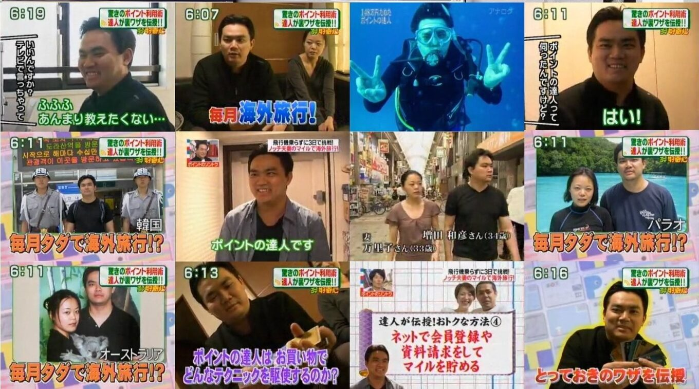
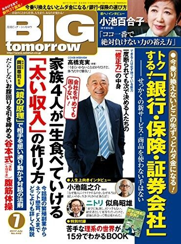
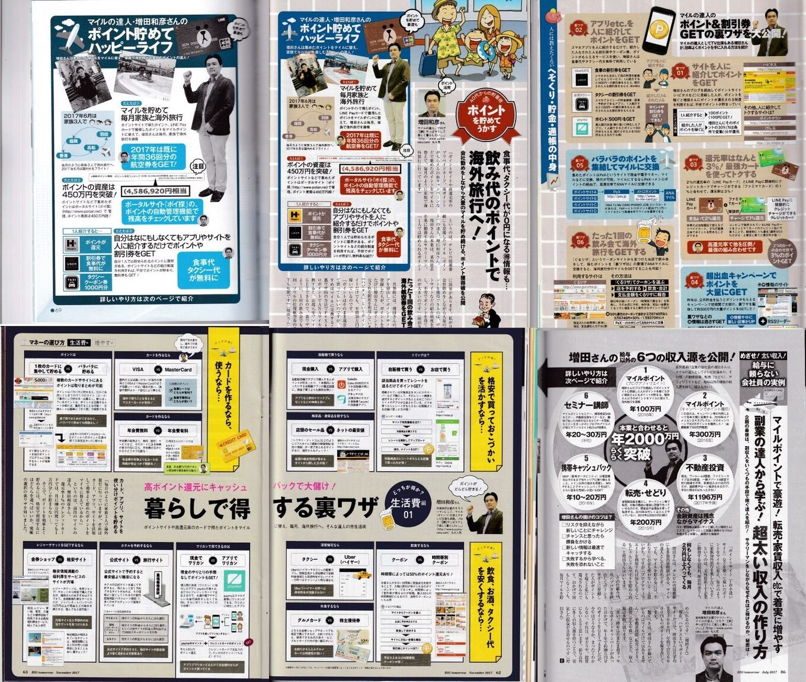
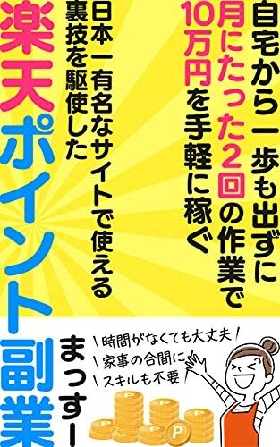
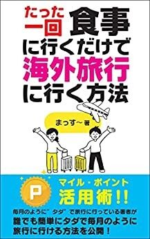
このマニュアルを書いた理由
私がこのマニュアルを書いた理由は、シンプルです。
「いつかね」と言い続ける人を、一人でも減らしたい。
家族との時間は、有限です。
子供が「パパ、旅行行きたい」と言ってくれる期間は、
思っているより短いものですよ。
その貴重な時間を、「お金がないから」「時間がないから」
という理由で諦めてほしくない。
私も、外資系企業で働きながら、
「時間がない」「余裕がない」と思っていました。
もし、この仕組みがなければ、
今ごろは家庭崩壊、娘に口も聞いてくれないパパになっていたことでしょう。
でも、仕組みさえ作れば、忙しい人でも、毎月旅行を楽しめるようになります。
だから、このマニュアルを作りました。
さあ、一緒に始めましょう。
先にお伝えしておきます。
この先で「仕組みの全体像」をお話ししますが、
読み終わったあと、たぶんこう思います。
「理屈はわかった。でも、本当に回るの？」
——その答えを、私は文章では用意していません。
画面をお見せしながら、あなたにもできるように、
やり方をご覧いただくことにしています。
マイル獲得実演 Zoomウェビナー（参加無料）
- 一回の食事で3,500マイル貯まる実演
- 国際線の特典航空券に、国内線をタダで付ける実演
- 月4〜5万マイル貯まっている、実際のカード履歴
先に席だけ押さえておいて、
続きを読んでいただくのが一番スムーズです。
第 1 章
マイルの秘密
この章では、「マイル」について詳しくお伝えします。
「マイルなら知ってるよ」という方も、ぜひ読み飛ばさずに読んでください。
なぜなら、マイルの「本当の価値」を知っている人は、ほとんどいないからです。
マイルとは何か？
マイルとは、航空会社が提供している「ポイント」のようなものです。
JAL（日本航空）なら「JALマイル」、ANA（全日空）なら「ANAマイル」といった感じで、
航空会社ごとにマイルがあります。
このマイルを貯めると、
- 飛行機の航空券と交換できる（特典航空券）
- ホテルのポイントと交換できる
- 商品や電子マネーと交換できる
「なるほど、ポイントみたいなものね」
そう、基本的にはポイントと同じです。
でも、マイルには他のポイントにはない、ある特徴があります。
マイルの「本当の価値」
楽天ポイント、Tポイント、dポイント...
これらの一般的なポイントは、1ポイント＝1円の価値です。
1,000ポイント持っていれば、1,000円分の買い物ができる。
シンプルですよね。
では、マイルはどうでしょうか？
マイルは、1マイル＝1円ではありません。
使い方によって、1マイルの価値が大きく変わるのです。
【例①】国内線エコノミーの場合
東京から沖縄への往復航空券を例に考えてみましょう。
- 必要マイル：15,000マイル
- 同じ航空券を現金で買うと：約46,000円
つまり、15,000マイルで46,000円の価値が得られます。
計算すると、1マイル＝約3円の価値です。
「おお、1ポイント1円より全然お得じゃん！」
そうなんです。でも、これはまだ序の口です。
【例②】国際線ビジネスクラスの場合
東京からハワイへのビジネスクラス往復を考えてみましょう。
- 必要マイル：65,000マイル
- 同じ航空券を現金で買うと：約50万円
計算すると、1マイル＝約7.7円の価値です。
【例③】国際線ファーストクラスの場合
さらに、東京からロンドンへのファーストクラス往復だと...
- 必要マイル：160,000マイル
- 同じ航空券を現金で買うと：約250万円
計算すると、1マイル＝約15.6円の価値です。
使い方次第で、価値が5倍以上も変わるのです。
これが、マイルの「本当の価値」です。
でも、普通の方法ではマイルは貯まらない
「マイルの価値はわかった。じゃあ、どうやって貯めればいいの？」
多くの人が最初に思いつくのは、クレジットカードで貯める方法です。
マイルが貯まるクレジットカードを作って、
普段の買い物をすべてカード払いにすれば、自然とマイルが貯まる...はず。
でも、計算してみてください。
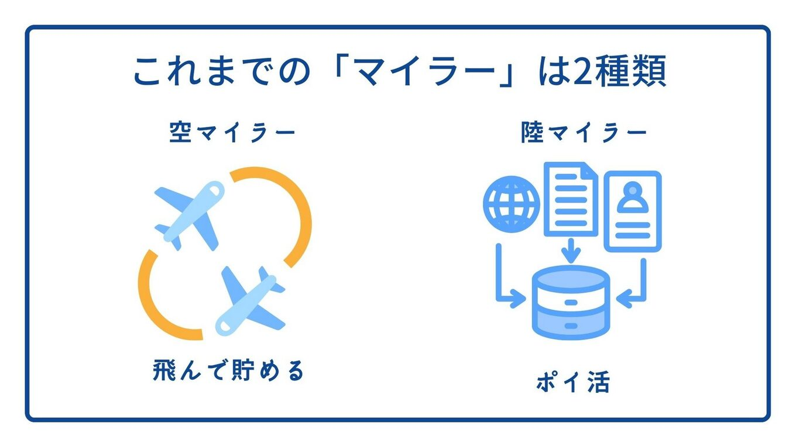
クレジットカードの限界
仮に、毎月10万円をクレジットカードで決済したとします。
還元率1%のカードなら、毎月1,000マイル。年間で12,000マイル。
東京から沖縄への往復特典航空券は、15,000マイル必要です。
つまり、1年以上コツコツ貯めて、やっと沖縄に1回行ける程度。
しかも、これは1人分です。
家族4人で行こうと思ったら、4年以上かかる計算です。
ハワイにビジネスクラスで行こうと思ったら...考えたくもないですよね。
これが、クレジットカードで貯める方法の限界です。
ポイ活の限界
「じゃあ、ポイントサイトを使えばいいんでしょ？」
そう思って、ポイ活を始める人も多いです。
確かに、ポイントサイトを使えば、
クレジットカードを発行するだけで5,000ポイント、
証券口座を開設するだけで10,000ポイントといった感じで、
一気にポイントを稼ぐことができます。
でも、ここに落とし穴があります。
ポイ活の最大の問題は、「一度きり」だということ。
同じクレジットカードを2回発行することはできません。
同じ証券口座を2回開設することもできません。
最初の数ヶ月は順調にポイントが貯まりますが、
半年、1年と経つうちに、やれる案件がどんどん減っていきます。
そして気づくんです。
「もう、やれる案件がない...」
これが、ポイ活の限界です。
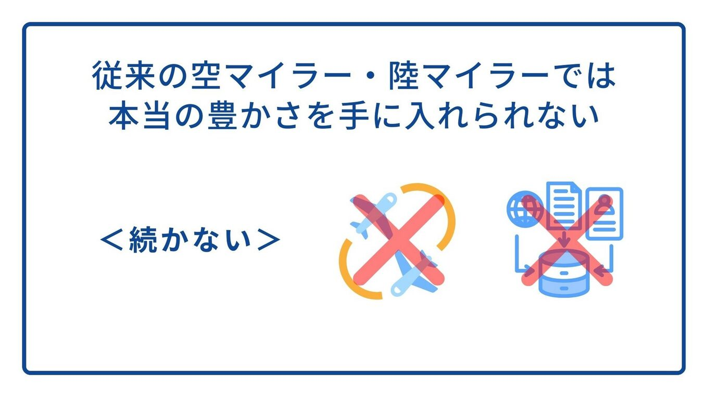
第3の選択肢：「ビジネスマイラー」
ここで、私が提唱する第3の選択肢をご紹介します。
それが、「ビジネスマイラー」です。
ビジネスマイラーとは、
「ビジネスの仕組みを使って、お金を稼ぎながらマイルを貯める人」のことです。
ポイ活との最大の違いは、継続性です。
ポイ活は「案件をこなす」ものなので、やればやるほど、やれる案件がなくなります。
一方、ビジネスは「仕組み」です。
一度作ってしまえば、毎月、毎月、継続的に回り続けます。
しかも、マイルが貯まるだけでなく、お金も増える。
「そんなうまい話があるの？」「具体的に何をするの？」
次の章で、その仕組みの全体像をお伝えします。
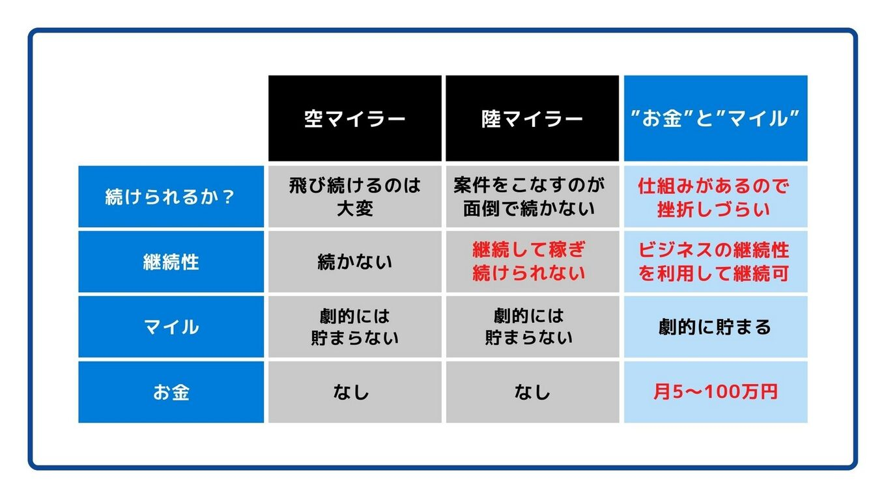
なぜ、あなたはこれを知らなかったのか
その前に、ひとつだけ言わせてください。
ここまで読んで、こう思った方もいるかもしれません。
「そんな方法があるなら、なぜ誰も教えてくれなかったんだ」
答えは、拍子抜けするほど単純です。
才能でもない。
年収でもない。
時間でもない。
"知っているか"
"知らないか"
それだけです。
私はこの世界を、もう何年も追いかけ続けています。
カードの改定も、キャンペーンの条件も、
気づけば変わっているからです。
そこまでして調べる理由は、ひとつだけ。
この世界が「知らない人が、知らないまま損をし続ける」
という構造になっているからです。
たとえば、あなたが去年払った旅費。
あの中の何割かは、払わなくてよかったお金かもしれません。
知らなかっただけで。
知らない人は、知らず知らずのうちに損をしていた。
それだけの話です。
いやあ、もったいない。
だから、もし今あなたが
「自分は今までなにをやっていたんだろう」と思ったとしても、
自分を責める必要はまったくありません。
責めるべきは、あなたの過去ではなく、
情報を持っていなかったという事実だけです。
そして、それは今日から変えられます。
最後にひとつだけ、覚えて帰ってください。
クレジットカードは、単なる決済手段ではありません。
人生をより楽しむための"プラチナパス"なのです。
ところで、いま出てきた数字。
「1マイル＝15.6円」
「250万円の航空券が160,000マイル」
——正直、ピンと来ないですよね。
私も、人から聞いただけの頃はそうでした。
実際の予約画面を見るまでは。
なので、その画面をお見せしながら、
どう操作すればそうなるのかまでご説明する場を用意しています。
第 2 章
「仕組み」の全体像
前章では、「ビジネスマイラー」という第3の選択肢をご紹介しました。
「お金を稼ぎながら、マイルが勝手に貯まる」そんな夢のような仕組み。
この章では、その仕組みの全体像をお伝えします。
仕組みの正体
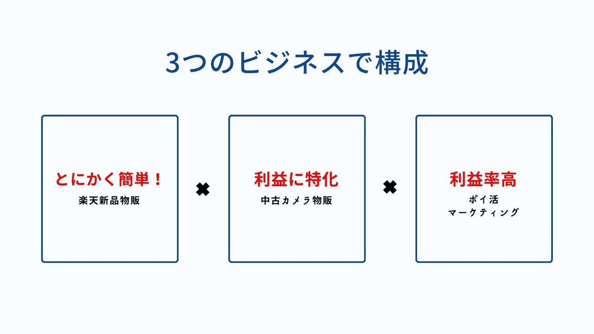
結論からお伝えします。
私たちがやっていることは、非常にシンプルです。
「楽天で商品を買って、Amazonで売る」
たったこれだけです。
「え？それだけ？」
はい、それだけです。もう少し詳しく説明しますね。
なぜ「楽天で買ってAmazonで売る」とマイルが貯まるのか？
楽天で買い物をすると、楽天ポイントが貯まりますよね。
しかも、楽天には「SPU（スーパーポイントアッププログラム）」という仕組みがあり、
条件を満たすと、ポイント還元率が10倍、15倍、20倍...と跳ね上がります。
さらに、「お買い物マラソン」などのキャンペーン期間中は、還元率がさらにアップします。
つまり、楽天で買い物をすると、購入金額の10%〜20%がポイントとして還元されるのです。
そして、この楽天ポイントは、マイルに交換することができます。
さらに、楽天での支払いにマイルが貯まるクレジットカードを使えば、
クレジットカードのマイルも同時に貯まります。
つまり、
- 楽天ポイント → マイルに交換
- クレジットカードのマイル
- ポイントサイト経由のポイント → マイルに交換
という「トリプルでマイルが貯まる」状態が作れるのです。
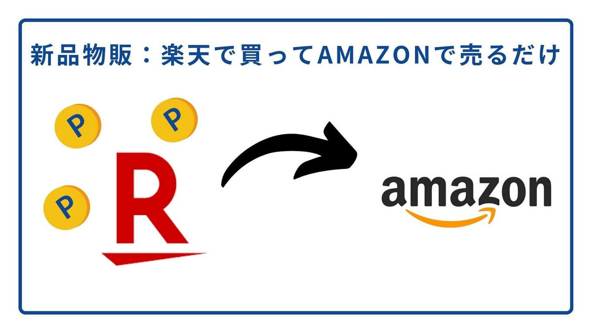
なぜお金も増えるのか？
「マイルが貯まるのはわかった。でも、買い物したらお金が減るんじゃないの？」
普通はそう思いますよね。
ここがポイントです。
私たちは、買った商品をAmazonで販売しています。
楽天で仕入れた商品を、Amazonで売る。
仕入れ値と売値の差額が、利益になります。
「でも、楽天で買ったものがAmazonで高く売れるの？」
はい、売れます。
なぜなら、同じ商品でも、楽天とAmazonでは価格が違うことがよくあるからです。
また、仮に仕入れ値と売値がほぼ同じだったとしても、
楽天ポイントの還元分が丸々利益になります。
実際には、もっと利益が出る商品を選んで仕入れるので、
月に5〜7万円の利益が出るのが一般的です。
しかも、その過程で毎月数万マイルが貯まっていくのです。
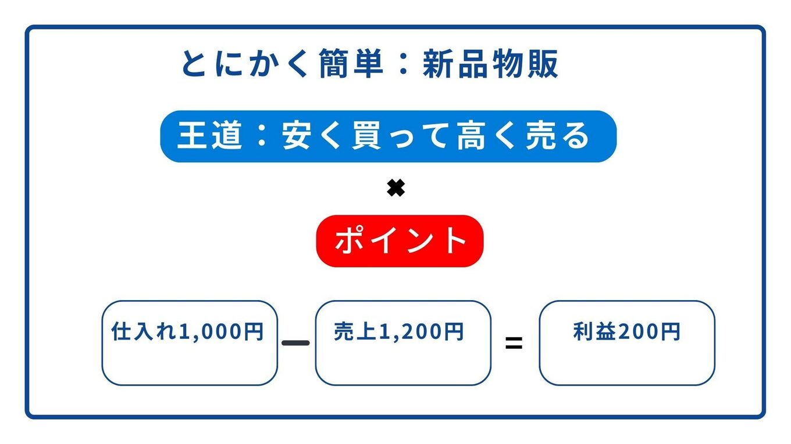
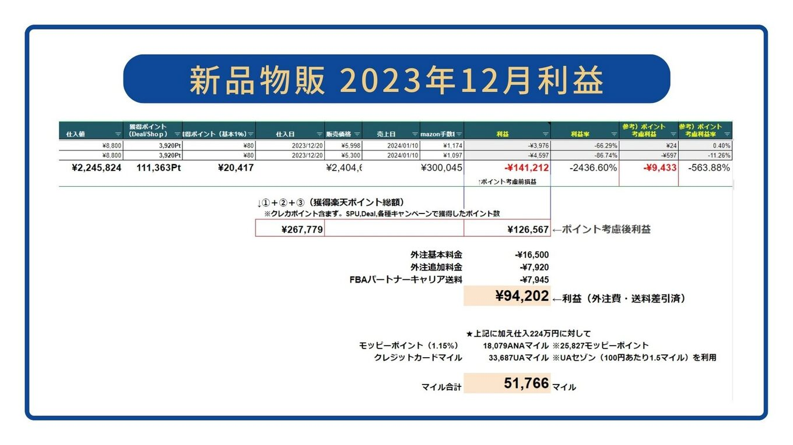
「それって転売じゃないの？大丈夫？」
ここまで読んで、こう思った方もいるかもしれません。
「それって、いわゆる転売ってやつでしょ？」
「なんか悪いことしてるみたいで嫌だな...」
「違法じゃないの？」
その気持ち、よくわかります。
「転売」という言葉には、ネガティブなイメージがありますよね。
でも、私たちがやっていることは、それとはまったく違います。
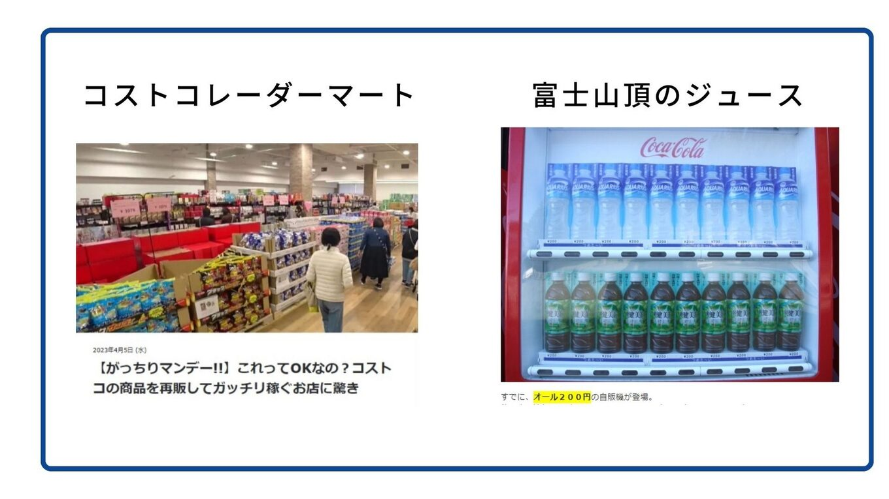
私たちがやっているのは「普通の小売業」です
まず、大前提として、
「安く仕入れて、適正価格で売る」という行為自体は、まったく違法ではありません。
むしろ、これは商売の基本中の基本です。
スーパーマーケットも、コンビニも、百貨店も、
すべて「仕入れて売る」ことで成り立っています。
私たちがやっていることは、それと同じです。
楽天という仕入れ先から商品を買い、Amazonという販売先で商品を売る。
これは「小売業」であり、れっきとした正当なビジネスです。
誰かに迷惑をかけているわけではない
私たちが扱っている商品は、普通に流通している一般的な商品です。
日用品、家電、美容用品、ブランド品など、誰でも買える商品を扱っています。
限定品を買い占めて高値で売る、というようなことはしていません。
つまり、誰かに迷惑をかけているわけではなく、
むしろ喜ばれているビジネスなのです。
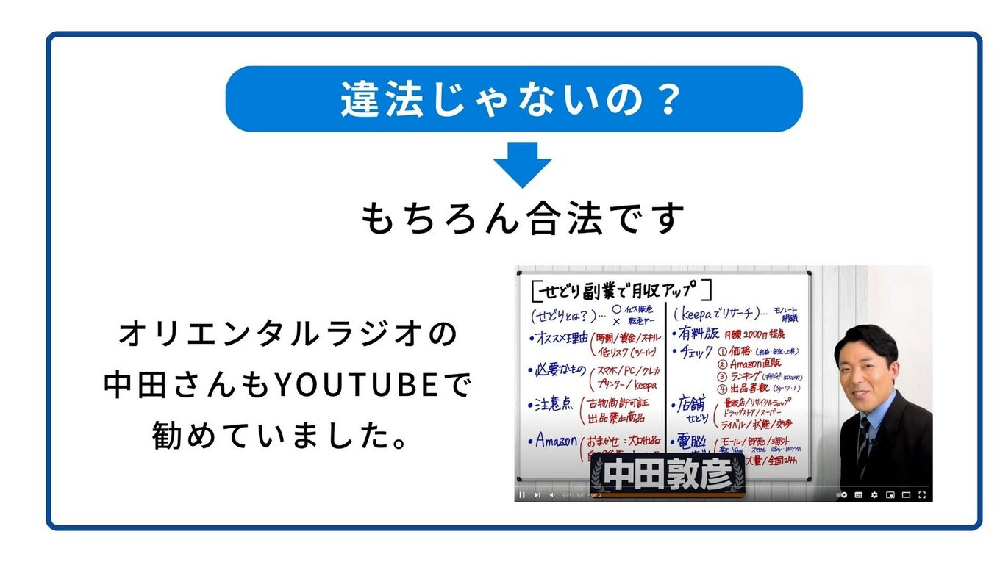
オリエンタルラジオの中田さんも推奨
「本当に大丈夫なの？」と思う方もいるかもしれません。
実は、この「せどり」と呼ばれるビジネスは、
オリエンタルラジオの中田敦彦さんもYouTubeで推奨しています。
「副業で月収アップ」というテーマの動画で、
初心者でも始めやすい副業として紹介されていました。
また、テレビ番組『がっちりマンデー！！』でも、
同様のビジネスモデルで成功している会社が紹介されています。
つまり、社会的にも認められている、正当なビジネスなのです。
「でも、忙しくて時間がないんですけど...」
ここまで読んで、こう思った方もいるかもしれません。
「仕組みはわかった。でも、仕入れて、梱包して、発送して...そんな時間ないよ」
その気持ち、よくわかります。
でも、安心してください。
この仕組みは、ほぼ「ほったらかし」で回せます。
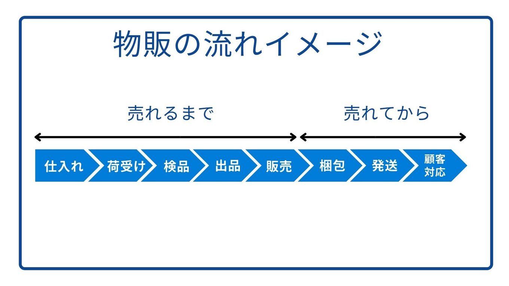
外注化で「ほったらかし」にできる
「え？ほったらかし？どういうこと？」
秘密は、「外注化」にあります。
実は、この仕組みで一番面倒な作業は、
「商品を受け取って、検品して、Amazonの倉庫に送る」という部分です。
でも、この作業、すべて外注できます。
具体的には、
- 楽天で商品を購入（自分でやる）
- 商品を外注会社に直接配送（自動）
- 外注会社が検品・梱包・Amazon倉庫へ発送（外注）
- Amazonで売れたら、Amazonが発送・顧客対応（Amazon）
- 売上金が自分の口座に入金（自動）
つまり、自分がやるのは「楽天で商品を買う」だけ。
あとは、外注会社とAmazonが全部やってくれます。
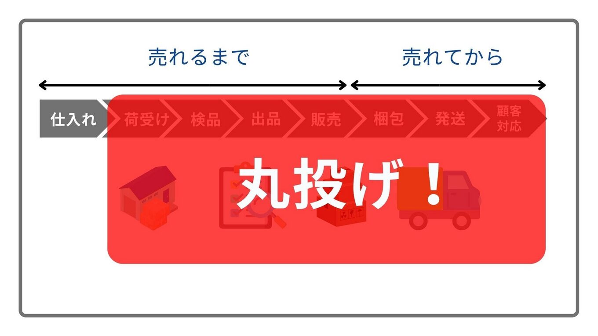
「何を買えばいいかわからない」も解決済み
「でも、何を仕入れればいいかわからないよ...」
その心配も、解決済みです。
実は、「何を仕入れれば利益が出るか」を分析して教えてくれるサービスも構築しました。
このサービスを使えば、「この商品を楽天で買ってください」という情報が届くので、
自分で商品を探す必要すらありません。
届いた情報を見て、ポチッと購入するだけ。
だから、月の稼働時間は4時間程度で済むのです。
仕組みの全体像まとめ
【ビジネスマイラーの仕組み】
- 楽天で商品を購入（月4時間程度）
- 商品は外注会社に直送
- 外注会社が検品・梱包・発送
- Amazonで販売・顧客対応はAmazonが実施
- 売上金が入金＋大量のマイルが貯まる
【得られるもの】
- 月5〜7万円の副収入
- 毎月数万マイル（国内旅行なら毎月"タダ同然"で行ける）
- マリオットポイントと連携すれば、高級ホテルも"タダ同然"
この仕組みを作れば、人生が変わる
- 毎年、家族で沖縄・北海道・ディズニーに行ける
- 旅費を気にせず、思い切り推し活ができる
- 日本中を旅しながらリモートワークができる
- マリオットの高級ホテルに"タダ同然"で泊まれる
- 月5〜7万円の副収入が安定して入る
- 「いつかね」ではなく「今度はどこ行く？」が口癖になる
「本当にそんなことができるの？」
次の章では、貯まったマイルをどう使えば価値が最大化するのかをお伝えします。
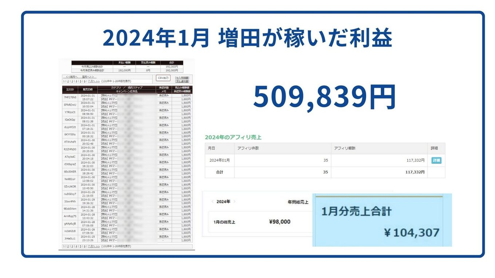
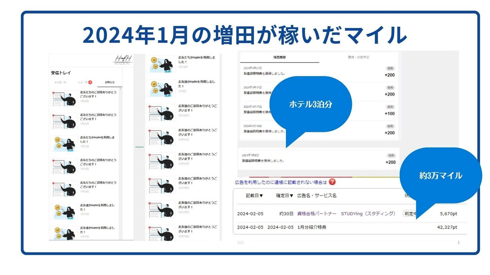
ここまで読んで、まだこう思っていませんか。
「理屈は通っている。でも、本当に回るのか？」
その疑いは、正しいです。
私も最初はそうでしたし、疑わずに始める人のほうが心配です。
だから私は、説明ではなく証拠を出すことにしました。
私の画面を、そのままお見せします。
編集も、切り貼りもしません。
そして、見て終わりにはしません。
あなたが同じことをするには何をすればいいのか、
その手順までご覧いただけます。
マイル獲得実演 Zoomウェビナー（参加無料）
- 一回の食事で3,500マイル貯まる実演
- 国際線の特典航空券に、国内線をタダで付ける実演
- 月4〜5万マイル貯まっている、実際のカード履歴
読んで理解したら、次はご自分の目で確かめてください。
やり方さえ分かれば、あとはご自分のペースで試せます。
それでも「無理そうだ」と思ったら、やめればいいだけです。
第 3 章
貯まったマイルの「賢い使い方」
前章では、「ビジネスマイラー」の仕組みをお伝えしました。
この仕組みを使えば、毎月数万マイルが貯まっていきます。
でも、せっかく貯まったマイル、
使い方を間違えると、ものすごくもったいないことになります。
この章では、マイルの「賢い使い方」をお伝えします。
マイルは「使い方」で価値が5倍変わる
第1章でもお伝えしましたが、とても重要なことなので、もう一度確認させてください。
マイルは、使い方によって価値が大きく変わります。
同じ10万マイルでも、
- 電子マネーに交換したら → 10万円
- ファーストクラスで使ったら → 150万円以上の価値
15倍も違うのです。
だから、マイルを電子マネーや商品券に交換するのは、
ものすごくもったいない使い方なんです。
賢い使い方①：国際線のビジネス・ファーストクラス
マイルの価値を最大化する王道は、
国際線のビジネスクラス・ファーストクラスで使うことです。
普通に買ったら、
- ハワイ往復ビジネスクラス：約50万円
- ヨーロッパ往復ファーストクラス：約250万円
こんな金額、普通は出せませんよね。
でも、マイルを使えば、
- ハワイ往復ビジネスクラス：65,000マイル
- ヨーロッパ往復ファーストクラス：160,000マイル
で乗れてしまいます。
ビジネスマイラーの仕組みを使えば、半年〜1年で、
ハワイにビジネスクラスで行けるだけのマイルが貯まります。
賢い使い方②：マリオットポイントとの連携
「でも、毎回海外に行くわけじゃないし...」
そう思った方に、もう一つの賢い使い方をお伝えします。
それが、「マリオットポイント」との連携です。
マリオットとは？
マリオットとは、世界最大のホテルチェーンです。
マリオットホテル、シェラトン、ウェスティン、リッツ・カールトン、
セントレジスなど、世界中に8,000以上のホテルを展開しています。
日本国内にも、東京マリオットホテル、シェラトン・グランデ・トーキョーベイ、
ウェスティンホテル東京、リッツ・カールトン東京・大阪・京都など、
高級ホテルがたくさんあります。
1泊5万円、10万円は当たり前。普通に泊まったら、財布が空っぽになります。
マリオットポイントがあれば、高級ホテルに"タダ同然"で泊まれる
マリオットには、「マリオットボンヴォイ」というポイントプログラムがあります。
このポイントを貯めると、世界中のマリオット系列ホテルに、宿泊料金なしで泊まれます。
しかも、ステータスが上がると、
- 部屋のアップグレード（スイートルームへの無料アップグレードも！）
- レイトチェックアウト
- 朝食無料
- ラウンジアクセス（アルコールも無料）
といった特典が受けられます。
マイルとマリオットポイントは交換できる
ここがポイントです。
実は、マイルとマリオットポイントは相互に交換できます。
つまり、ビジネスマイラーで貯めたマイルを
マリオットポイントに交換すれば、高級ホテルにも"タダ同然"で泊まれるということです。
飛行機だけでなく、ホテルも"タダ同然"。
これが、私たちが「毎月"タダ同然"で高級ホテルに泊まっている」カラクリです。
具体的にどれくらい貯まる？シミュレーション
「実際、どれくらい貯まるの？」
具体的な数字でお見せしましょう。
【ビジネスマイラー実践者の平均的な実績】
- 楽天での仕入れ額：月約200万円（年間約2,400万円）
- 利益：月約5〜7万円（年間約60〜80万円）
- 獲得マイル：月約3〜5万マイル（年間約40〜60万マイル）
年間40〜60万マイルあれば、
- 国内旅行なら、毎月家族で行ける
- ハワイにビジネスクラスで年2〜3回行ける
- ヨーロッパにファーストクラスで年1〜2回行ける
- マリオットポイントに交換すれば、毎月高級ホテルに泊まれる
「いつかね」が「今度はどこ行く？」に変わる。
これが、ビジネスマイラーの威力です。
LCCの方が安い？という誤解
ここで、よくある誤解を解いておきます。
「マイルを貯めるより、LCCで安く行った方がいいんじゃないの？」
確かに、国内線エコノミーで考えると、
LCC（格安航空会社）の方が安いこともあります。
15,000マイルで沖縄往復するより、LCCで行った方が安い。その通りです。
でも、ビジネスクラス・ファーストクラスにはLCCはありません。
そして、マリオットの高級ホテルにも「格安版」はありません。
つまり、マイルの真価が発揮されるのは、
「普通なら手が届かない贅沢な体験」をする時なのです。
- ファーストクラスのフルフラットシートで熟睡しながら海外へ
- リッツ・カールトンのスイートルームで特別な記念日を
- シェラトンのラウンジで無料のシャンパンを楽しみながら夕日を眺める
こういった体験は、お金を払えば誰でもできます。
でも、普通の人には手が出ない金額です。
マイルがあれば、それが「タダ同然」でできる。
これが、ビジネスマイラーの本当の価値です。
自己流は、"事故流"です
ここまで、仕組みも、使い方も、ひととおりお話ししました。
たぶん、こう思っている方もいると思います。
「なんとなく分かった。あとは自分で調べてやってみよう」
その気持ち、すごくよく分かります。
私も昔はそうでした。
でも、これだけは先に言わせてください。
自己流は、"事故流"です。
私はこの仕組みにたどり着くまでに、
何年も遠回りをして、それなりの金額を捨てました。
失敗したカード。
使い道を間違えて溶かしたマイル。
仕入れて売れなかった在庫。
いま思えば、全部「先に知っていれば避けられた」ものばかりです。
人は、聞いただけのことを1日で7割忘れる
心理学に「エビングハウスの忘却曲線」という有名な研究があります。
人は新しく覚えたことを、1日で約7割忘れるというものです。
つまり、このマニュアルを読み終えた明日、
あなたの頭に残っているのは、たぶん3割くらいです。
それが普通です。あなたの記憶力の問題ではありません。
だから私は、読むだけで終わらせない場を用意しています。
文字ではなく、実際の画面で見てもらう場です。
見たものは、読んだだけのものより、はるかに残ります。
自己投資という言葉が苦手な人へ
「自己投資」という言葉、少し胡散臭く聞こえますよね。
私もあまり好きな言葉ではありません。
でも、事実として、私は今でも
「先に知っている人から教わる」ことにお金を使い続けています。
なぜかというと、
自分ひとりで試行錯誤する時間のほうが、圧倒的に高くつくからです。
1年かけて自力でたどり着くことを、
先に知っている人から3時間で受け取れるなら、
私は迷わず後者を選びます。
貯金やNISAでコツコツ増やすことも、もちろん大事です。
否定はしません。
ただ、増やす前に「減らさない知識」を持っているかどうかで、
同じ収入でも人生の中身はまるで変わります。
そして、その知識は、待っていても向こうからは来ません。
何事も、早く決断して動いた人がトクをします。
これは私が500名以上を見てきて、例外がなかったことです。
想像してみてください。
フルフラットの座席で目を覚ますと、窓の外はもう海外の空。
チェックインしたホテルの部屋は、頼んでもいないのにスイート。
夕方、ラウンジのシャンパンを片手に夕日を眺めている。
——これに、あなたが現金で払った金額は、ほとんどありません。
この状態が「特別な人だけのもの」なのか、
それとも仕組みで作れるものなのか。
実際の予約画面と、貯まっているマイルの残高をご覧ください。
そして、そこに近づくための最初の手順も、あわせてご覧ください。
第 4 章
実践者たちの声
ここまで読んで、
「理屈はわかった。でも、本当にそんなうまくいくの？」
そう思っている方もいるかもしれません。
そこで、実際にこの仕組みを実践して、人生を変えた方々の声をご紹介します。
実践者の声：田中さん（40代・会社員・男性）
「月5万円の副収入と、年3回の家族旅行が実現しました」
私は都内の会社に勤める普通のサラリーマンです。妻と子供2人の4人家族。
毎年「今年こそ家族旅行に行こう」と思うのですが、
飛行機代とホテル代を計算すると、いつも諦めていました。
子供たちが「沖縄行きたい」「北海道行きたい」と言うたびに、
「来年ね」と言い続けて、もう何年も経っていました。
そんな時、増田さんのビジネスマイラーに出会いました。
正直、最初は半信半疑でした。
でも、やってみると、本当にマイルが貯まり始めたんです。
しかも、お金も増えていく。
3ヶ月目には月5万円の利益が安定して出るようになり、
半年後には家族4人で沖縄に行けるだけのマイルが貯まっていました。
今では、年に3回は家族旅行に行っています。沖縄、北海道、ディズニー...
子供たちの笑顔を見るたびに、始めて本当に良かったと思います。
「来年ね」が「今年はどこ行く？」に変わりました。
実践者の声：佐藤さん（30代・主婦・女性）
「推し活が思いっきりできるようになりました！」（月3〜4万円の副収入／先月は3公演すべて参戦）
私は、あるアーティストの大ファンで、ライブがあれば全国どこでも行きたいタイプです。
でも、交通費と宿泊費がバカにならなくて...
毎回「今回は我慢しよう」と泣く泣く諦めることも多かったです。
ビジネスマイラーを始めてから、世界が変わりました。
今では、飛行機代はほぼタダ。
ホテルもマリオットポイントで泊まれるので、実質タダ。
しかも、月3〜4万円の副収入もあるので、
グッズ代やチケット代に余裕で回せます。
先月は、東京・大阪・福岡の3公演、全部行きました。
以前の私からしたら、夢のような話です。
推しを応援するのに、お金の心配がなくなる。
ファンとしてこんなに幸せなことはありません。
実践者の声：山本さん（30代・フリーランス・男性）
「旅しながら働く生活が実現しました」（月の半分は旅先で仕事）
僕はフリーランスのWebデザイナーです。
パソコン1台あればどこでも仕事ができる環境にいます。
でも、実際は毎日同じ部屋で仕事していました。
旅行に行く余裕なんてなかったからです。
ビジネスマイラーを始めてから、生活が一変しました。
今は、月の半分は旅先で仕事をしています。
沖縄のホテルで、海を見ながら仕事をしたり、
京都の町家カフェで、紅葉を眺めながら仕事をしたり。
移動は飛行機代タダ、宿泊もほぼタダ。
しかも副収入もあるので、むしろ旅行しながらお金が増えていく。
「旅しながら働く」って、意外と簡単に実現できるんですね。
実践者の声：鈴木さん（50代・会社員・男性）
「退職後の楽しみが、退職前に実現しました」（100万円超のビジネスクラス航空券がマイルで"タダ同然"）
私は50代の会社員です。
「退職したら、妻と一緒に世界中を旅行したい」
そう思って、コツコツ貯金していました。
でも、このペースでは、退職までに十分な旅行資金が貯まるのか不安でした。
ビジネスマイラーを始めて1年。
今では、毎年ハワイにビジネスクラスで行っています。
普通に買ったら100万円以上する航空券が、マイルでタダ。
ホテルも、マリオットの高級リゾートにポイントでタダ。
「退職後の楽しみ」が、今、実現しています。
妻も「こんな贅沢な旅行ができるなんて」と大喜びです。
退職を待たずに、人生を楽しめるようになりました。
始めて本当に良かったです。
実践者に共通していること
これらの実践者の方々に共通していることがあります。
それは、
「最初は半信半疑だった」
ということ。
「そんなうまい話があるわけない」
「自分にできるわけない」
「忙しくて時間がない」
皆さん、最初はそう思っていました。
でも、一歩踏み出して、仕組みを作った人だけが、人生を変えています。
そして、もう一つの共通点
実は、共通点はもう一つあります。
この方たちは全員、
始める前に、私が実践している画面を見ています。
田中さんも、佐藤さんも、山本さんも、鈴木さんも、
最初は「本当かな」と思いながら、実演を見に来ました。
そこで、貯まっていくマイルと、実際の予約画面を見た。
そして、自分が何をすればいいのかが分かった。
順番はいつも同じです。
読む → 見る → 動く。
あなたは今、1つ目を終えたところです。
田中さんも、佐藤さんも、山本さんも、鈴木さんも、
最初はこのマニュアルを読んだ人でした。
違ったのは、そのあと実演を見に来たかどうかだけです。
マイル獲得実演 Zoomウェビナー（参加無料）
- 一回の食事で3,500マイル貯まる実演
- 国際線の特典航空券に、国内線をタダで付ける実演
- 月4〜5万マイル貯まっている、実際のカード履歴
次にこの欄に載るのが、あなたの声だと嬉しいです。
▶ ウェビナーの日程を選ぶ最終章 「いつかね」を卒業する日
このマニュアルを最後まで読んでくださり、ありがとうございます。
ここまで読み進めてきたあなたは、すでに大きな一歩を踏み出しています。
最後に、大切なことをお伝えさせてください。
家族との時間は、有限です
子供が「パパ、沖縄行きたい」と言ってくれる期間。
実は、思っているより短いです。
小学生の頃は「家族で旅行に行きたい！」と目を輝かせていた子供も、
中学生になれば部活や友達が優先になり、
高校生になれば、家族旅行より友達との旅行を選ぶようになります。
気づいた時には、
「家族みんなで旅行に行く」機会は、ほとんどなくなっています。
「来年こそは」と言い続けているうちに、
その「来年」は永遠に来ないかもしれません。
推しは、いつまでも活動しているわけではない
大好きなアーティスト。応援しているアイドル。
彼らがステージに立っている時間も、有限です。
活動休止、解散、引退...
「次のライブは絶対に行こう」と思っていたのに、
気づいた時には、もうその機会がなくなっていた。
そんな後悔をしている人を、私は何人も知っています。
「お金が貯まったら行こう」と思っているうちに、
その機会は失われてしまうかもしれません。
「いつか」は、永遠に来ない
「いつか家族で沖縄に行きたい」
「いつか推しのライブに全通したい」
「いつか旅しながら働きたい」
その「いつか」は、いつ来るのでしょうか？
給料が上がったら？ 貯金が貯まったら？ 時間ができたら？
残念ながら、待っているだけでは、その日は永遠に来ません。
給料は思うように上がらない。
貯金は何かと出費で消えていく。
時間は、いつまで経っても「ない」まま。
「いつか」を「今」に変えるには、自分から行動を起こすしかないのです。
でも、難しいことをする必要はない
「行動を起こす」と言っても、
何か難しいことをしなければならないわけではありません。
このマニュアルでお伝えした「ビジネスマイラー」の仕組みは、
- 特別なスキルは不要
- 月4時間程度の作業
- 外注化で「ほったらかし」にできる
- 仕入れ情報も提供されるので、自分で探す必要なし
という、忙しい人でも無理なく続けられる仕組みです。
まず必要なのは、「やってみよう」という気持ちだけです。
1年後、あなたはどちらの自分でいたいですか？
想像してみてください。
1年後のあなたは、どちらの自分でいたいですか？
【選択肢A】何も変わらない1年後
相変わらず、旅行は我慢。
子供に「いつかね」と言い続ける日々。
推しのライブは、お金がなくて断念。
毎日同じ場所で、同じ生活の繰り返し。
「あの時、始めていれば...」と後悔している。
【選択肢B】仕組みを作った1年後
家族で沖縄旅行を楽しんでいる。
マリオットの高級ホテルに、"タダ同然"で泊まっている。
推しのライブに、交通費を気にせず参戦している。
旅先で、海を見ながら仕事をしている。
「あの時、始めて本当に良かった」と心から思っている。
どちらの自分になりたいですか？
答えは、明らかですよね。
では、その差は今日、どこでつくのか
正直に言うと、AとBを分けるのは、才能でも、年収でも、家庭環境でもありません。
このあと数分で、日程を1つ選ぶかどうか。
それだけです。
大げさに聞こえるかもしれませんが、
私が500名以上を見てきて、本当にそうでした。
このマニュアル【基礎編】では、
- マイルとは何か
- なぜ普通の方法では貯まらないのか
- 「ビジネスマイラー」という仕組みの全体像
- マイルの賢い使い方
- 実践者たちのリアルな声
をお伝えしてきました。
「この仕組みなら、自分にもできそうだ」
そう感じていただけたなら、嬉しいです。
でも、ここで終わると、たぶん明日には7割忘れます。
それが人間です。
だから、忘れる前に、実際にやっている画面を見てください。
【実践編】では、
- 具体的に何から始めればいいのか
- マイルが実際に貯まっていく様子
- 最初につまずきやすいポイント
を、画面を共有しながら、実際にマイルを貯める手順をそのままお見せします。
あなたが同じようにできるように、順を追ってご覧いただけます。
「いつかね」を卒業する日は、今日です。
ここまで読んでくださった方に、最後にお願いがあります。
このページを閉じる前に、日程だけ選んでください。
所要時間は30秒です。
参加は無料で、合わないと思ったら途中で退出していただいて構いません。
私は困りません。
困るのは、また「いつかね」と言う1年が始まることのほうです。
マイル獲得実演 Zoomウェビナー（参加無料）
- 一回の食事で3,500マイル貯まる実演
- 国際線の特典航空券に、国内線をタダで付ける実演
- 月4〜5万マイル貯まっている、実際のカード履歴
最後に
私がこのマニュアルを作った理由は、シンプルです。
「いつかね」と言い続ける人を、一人でも減らしたい。
家族との時間。推しを応援する時間。自由に旅をする時間。
これらはすべて、有限です。
お金がないから、時間がないからという理由で、
その貴重な時間を諦めてほしくない。
私自身、外資系企業で忙しく働きながらも、
この仕組みを作ったことで、人生が変わりました。
今では、毎月高級ホテルに"タダ同然"で泊まり、年に何度も海外旅行を楽しんでいます。
そして、私だけでなく、
この仕組みを教えた500名以上の方々も、同じように人生を変えています。
次は、あなたの番です。
「いつかね」を「今度はどこ行く？」に変える日は、今日です。
ウェビナーでお会いしましょう。
増田 和彦